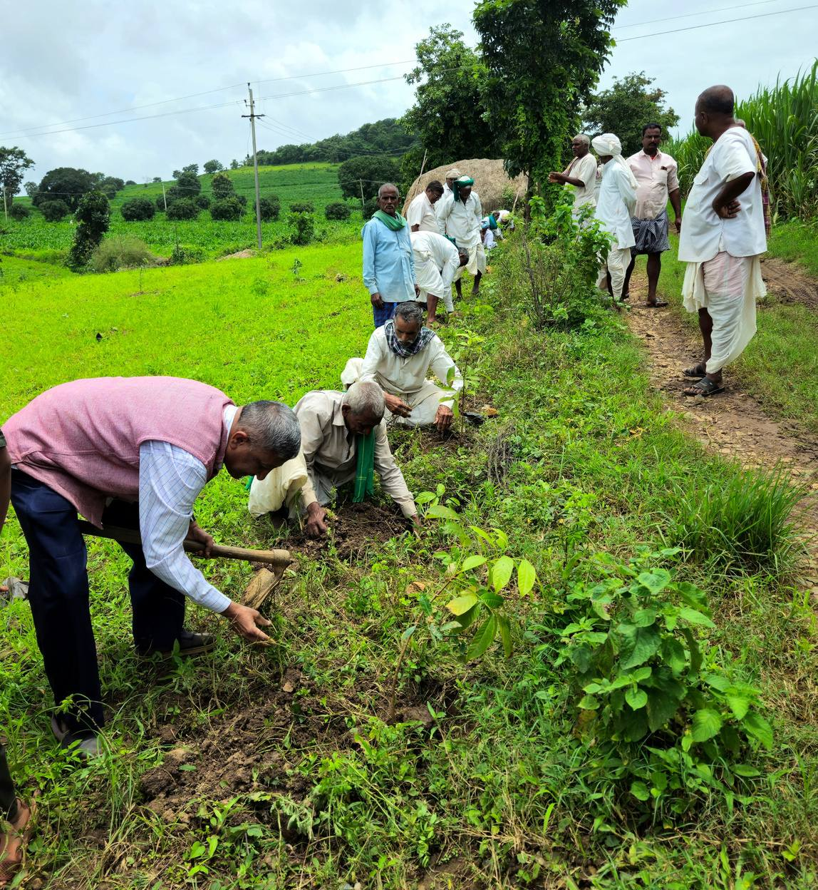

What young people were up against
Recurring water shortages and erratic weather left farming families with crop failures and losses. Many young people saw little future in farming.
What the grant made possible
The project introduced climate-resilient, tree-based farming systems, with training at the Krishi Vigyan Kendra, exposure visits, farmer field schools and support to make organic inputs. Young farmers became demonstration farmers for their villages.
Laxmi: a young farmer and role model
Laxmi Parameshwar Sunagar, a 25-year-old arts student, farms five acres with her family that were mostly under maize, until water shortages kept cutting yields. With the project's support she converted one acre to arecanut intercropped with banana, with cowpea and jowar between the rows.
She applied, with her father, for Horticulture Department support and received INR 50,000 to install drip irrigation. She now makes her own vermicompost and Jeevamruta, and her plot has become a demonstration farm. She acts as an ambassador for climate-resilient, tree-based farming in her community.
Stiffen: learning across generations
Stiffen Dandin, a 23-year-old student from Tumarikoppa village in Kalaghatagi block, joined with his father after an unusually wet season. Together they set up a vermicompost pit and planted guava, custard apple, lemon, cashew, orange, jackfruit and sapota, laying the base for a farm that can serve as a village model.